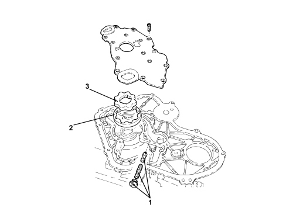
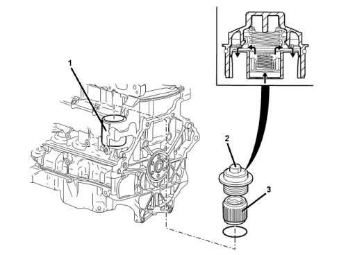

INTRODUCTION - ENGINE LUBRICATION
- Path
- Descriptions > 10 ENGINE > 1084 ENGINE LUBRICATION > INTRODUCTION - ENGINE LUBRICATION
- Kind
- system description
- Applies to
- engines: 2.2; all production periods
- Interactive page
- https://sloeber94.github.io/elrnDB-fCrm/en/#/194002115
Applies to: engines: 2.2; all production periods
OIL PUMP

1. Pressure regulator valve
2. Stator
3. Rotor
The oil pump is built into the timing chain casing.
It is operated by the crankshaft via a torsional vibration damper. The pressure regulator valve is accessible from outside and opens throughout a pressure range from 4 to 6 bars.
The two main lubrication channels are fied via channels cast into the cylinder block. These main channels feed the entire engine lubrication system, bearings, cylinder head, chain and balancing shafts.
OIL FILTER

1. Oil filter housing
2. Oil filter cover
3. Filter cartridge
The oil filter cartridge seat is cast into the engine block.
The oil filter consists of a paper cartridge. The filter cover, which also contains the bypass valve, is screw-in.